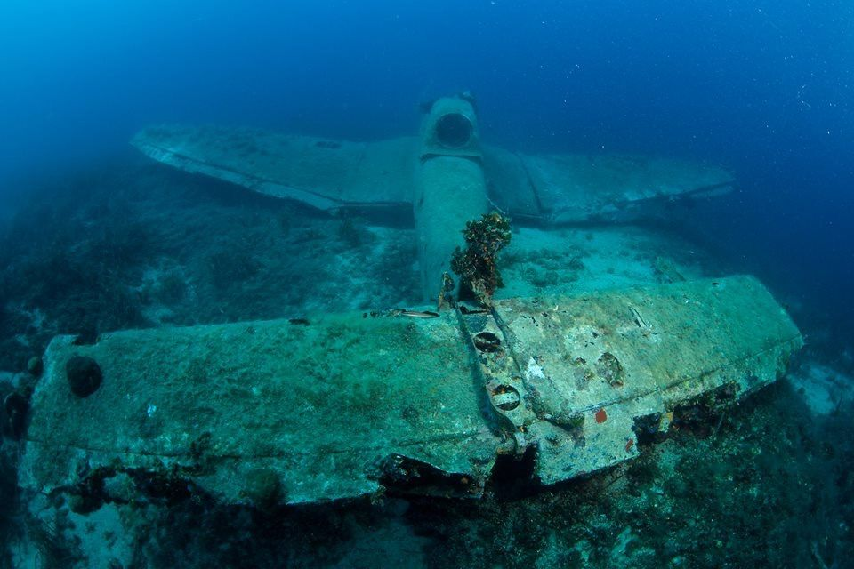

Štuka
- Location
- Murter Sea
- Type
- Wreck
- Depth
- Max. 30 m
A Junkers Ju 87 aircraft wreck discovered by spearfishers in September 2014. The airframe is largely preserved, with an open cockpit and the engine lying beside the aircraft. The machine gun and instrument console were removed for restoration and conservation.